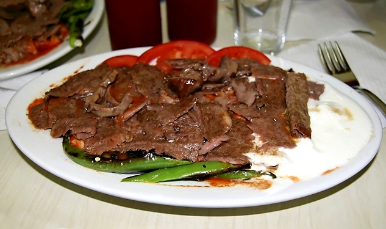

Iskender

Description
Iskender Kebap auch Bursa kebabı genannt, ist ein Fleischgericht der türkischen Küche
und stellt eine Variante des Döner Kebap dar. Beim İskender Kebap wird das am Drehspieß
gegrillte und dünn abgeschnittene Kalb- oder Lammfleisch mit Fladenbrot, Joghurt,
gegrillten Paprika, Tomaten und zerlassener Butter serviert.
Das Gericht ist nach seinem Erfinder İskender Efendi benannt, der im späten
19. Jahrhundert in Bursa lebte. Heute betreiben seine Nachkommen eine in Bursa
ansässige Kette von Restaurants, in denen neben obligatorischen türkischen Vorspeisen
(Meze) ausschließlich das Original Kebapçı İskender angeboten wird, das inzwischen
als Marke eingetragen wurde.
Ingredients
- 500g Lammfleisch
- 1 große Zwiebel
- 6 EL Oregano
- 1 Tomate
- 1 Spitzpaprika
- 3 EL Tomatenmark
- 500ml Joghurt
- 1 Knolle Knoblauch
- 1 EL Peperoni
- 500g Butter
- Salz und Pfeffer
- 1 Fladenbrot
Steps
- Für die Joghurtsauce den Joghurt (am besten "Ömür Joghurt" aus dem türkischen Markt)
mit 3 durchgepressten Knoblauchzehen verrühren und mit Oregano und Salz abschmecken.
- Für die Döner Zubereitung das Lammfleisch in hauchdünne Scheiben schneiden.
Paprika, Zwiebel, Tomate und 3 Knoblauchzehen sehr klein schneiden, mit dem
Lammfleisch in eine Schüssel geben und 3 EL Joghurt, reichlich Pfeffer, 5 EL Oregano,
3 EL Tomatenmark und 1 EL Salz dazu geben und alles gut mischen. Mindestens 2 Stunden,
besser über den Tag ruhen lassen!
- Pide (Fladenbrot) im Backofen knusprig aufbacken. Sehr klein würfeln und auf 4 Teller
verteilen.
- 200 g Butter in einer großen Bratpfanne erhitzen und die Döner Zubereitung darin
goldbraun und knusprig braten! Das Fett abnehmen und auf die klein geschnittenen Pides
träufeln.
- 300 Gramm Butter in einer separaten Pfanne erhitzen und 1 EL Salz und 1 EL
getrocknete scharfe Peperoni unterrühren.
- Das Döner-Fleisch auf die Teller verteilen und die Joghurtsauce darauf geben.
Zuletzt die sehr heiße Würzbutter darüber gießen.
- Dies nennt man bei den Türken Iskender. Sehr aufwändig, aber so gut!